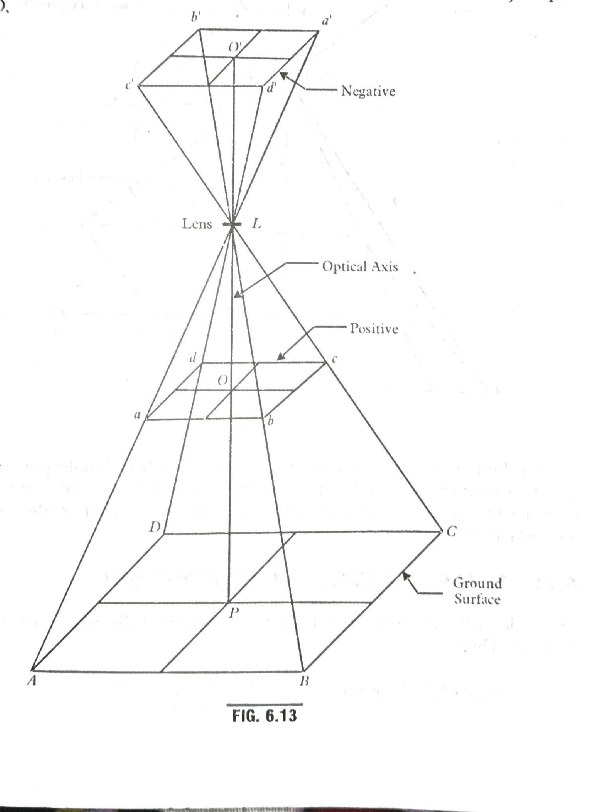

A vertical photograph is an aerial photograph made with the camera axxis (or optical axis) coinciding with the direction of gravity.
The above fig:6.13 shows the geometry of a vertical photograph.
The lens L is at the exposure station.
The negative is placed at a distance equal the focal length (f) begind the rear nodal point(n) of camera.
The object space ABCD is projected as a'b'c' on the negative.
Point O' is the principal of the photograph.
LO' from the lens of the photograph is equal to the focal length 'f' of the camera.
A tilted photograph is an aerial photograph made with
the camera axis unintentionally tilted from the vertical by a small amount generally less than 3°
An oblique photograph is an aerial photograph taken with the camera axis
directed intentionally between the horizontal and the vertical
ABCD = oblique plane of the photograph negative.
CDEF = Ground horizontal plane.
O = perspective centre.
k = principal point.
K = Ground principal distance.
Ok = Principal distance
t = Angle of tilt.
n = photo-nadir or photo plumb point.
N = Ground nadir or ground plumb point.
noN = plumb line or vertical line through perspective centre.
i = Isocentre
I = ground isocentre
nik = principal line
h = horizon point
i1ii2 = Axis of tilt = isometric parallel.
THE PHOTO-THEODOLITE :
The photo-theodolite is a combination of a 1 second theodolite and a terrestrial camera.
A photo-theodolite essentially consists of the following part.
1. A camera boxA of fixed focus type. The focal length of the lens is generally 15 cm or more. The camera box is mounted on the axis exactly in the same manner as the vernier plate of a theodolite. Thus, the box can be rotated in azimuth about its vertical axis.
2. A hollow rectangular frame I placed vertically to the rear side. The frame carries two cross-hairs k and k', the intersection of which is exactly opposite to the optical centre of the lens
Two small celluloid strips can be fitted into the grooves in the lower corners of
the frame I, and can be easily removed to write any description upon them in ink which is also photographed.
3. Across the rear of the vertical frame is also carried a straight transparent celluoloid tangent scale. Upon the base of the frame is pivoted a magnetic needle carrying a vertical cylindrical transparent scale (M) graduated to 30 minutes.
4. The sensified photographic plate is placed between the vertical frame (I) and the back which is held by the spring.
The reading of the scale at its intersection with the vertical hair on the photograph gives the magnetic bearing of the principal vertical plane
5. The box is supported on the tripod and is furnished with an inner and an outer axis. each of which is fitted with a clamp and fine adjusting screw. The graduated horizontal circle carries verniers reading to single minutes. These are supported on a levelling head carrying three foot screws.
6. On the top of the box, a telescope is fitted. The telescope can be rotated in a vertical plane, about a horizontal axis, and is fitted with vertical arc with verniers, clamp and
slow motion screw. The line of sight of the telescope is set in the same vertical plane as the optical axis of camera.
Give Data :
Focal length (f) = 200mm
f =0.2m
Scale = 1/2000
so, sacle =f/H
1/2000 =0.2/H
H =0.2*2000
H = 400 m
The length of air base is given by
B = (1-pl/100)*ls
B=(1-0.4)*250*2000/1000
B = 300 m
using equation : dh = (H-h)^2*dp/Bf
corresponding to datum, the error dh for dp = 0.1 mm is
dh = (400-0)^2*0.1/300*200
dh = 0.267.
Scale of the photograph for datum elevation s=f/H .
s = 150/500*1000 .
s = 1/3333.33
for datum elevation we have
B/b =H/f
B = H*b/f.
s =s*b { since s=f/H }
B = 3333.33*5.15/100 .
B = 171.66 m
The parallaxes for the top and the bottom of the tower are calculated from equation:
p = Bf/H-h
For bottom of the tower , h=0
p1 = 171.66*150/(500-0) = 51.498
For the top of the tower , h =240 :
p2 = 171.66*150/(500-240) = 99.03
Hence difference of parallax for top and bottom of tower
^(delta) p = (p2-p1)
^(delta) = (99.03 - 51.498)mm
^(delta) = 47.532
Exposure station is a point in space , in the air, occupied by camera lens at the instant of exposure.
Literally it is the space position of the front nodal point at the instant of exposure.
The point where a perpendicular dropped from nodal point strikes the photograph is called principal point.
Isocentre is the point in which the bisector of the angle of tilt meets the photograph.
Tilt displacement is defined as the difference between the distance of image of a point on the tilted photograph from the isocentre and the distance of the image of a same point on the vertical photograph.